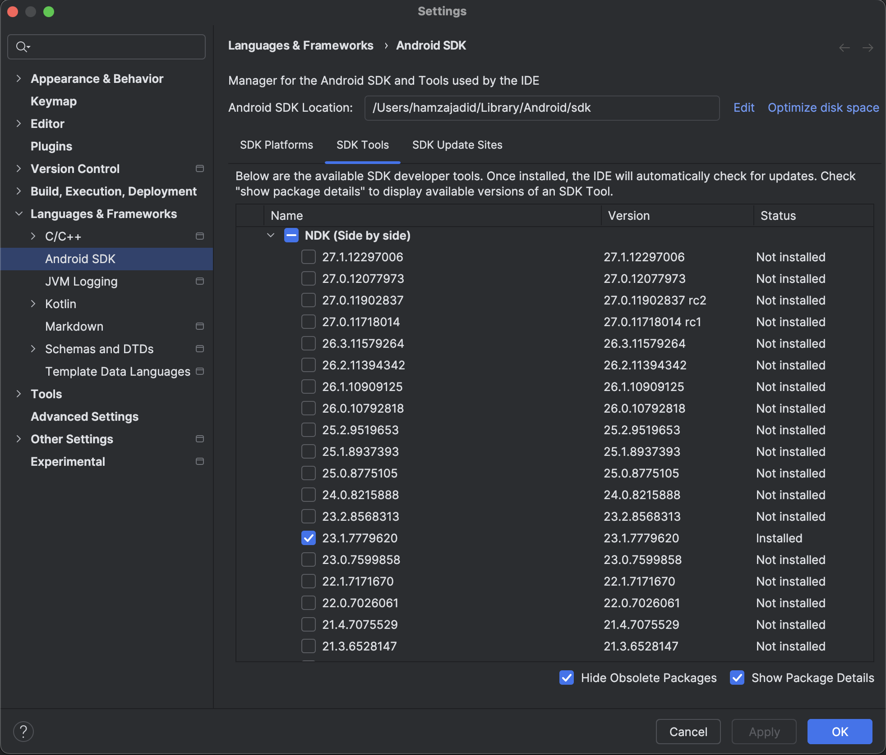

Contribution Guide
This guide is mostly for macOS users, if you found your way to build it on windows or linux feel free to open a PR!
Apple
System Requirements
It only requires XCode and the iOS target triplets
rustup target add \
aarch64-apple-ios \
x86_64-apple-ios \
aarch64-apple-ios-sim
Swift Package Manager
We're using SPM (swift package manager), a limitation while using an xcframework locally is having to specify the path,
which doesn't play well when publishing on remote. A work around for this limitation is to set the useLocalFramework to
true and return it back to false before pushing.
Building
To generate swift bindings run:
./build-ios.sh
This will generate the swift bindings and create an xcframework with the built rust static libraries.
Releasing
Similar to the building command but we should pass --release
./build-ios.sh --release
This will create a ZIP archive of the xcframework and update Package.swift with the computed checksum.
This is only needed when cutting a new release, not for local development.
Android
System Requirements
Android Studio
Follow the installation instructions on the official website
Java
Install java 17
brew install --cask zulu@17
NDK (native development kit)
We're writing native code so NDK is required for this task, and we're using cargo-ndk
To install cargo-ndk run:
cargo install cargo-ndk
And add the android target triplets
rustup target add \
aarch64-linux-android \
armv7-linux-androideabi \
x86_64-linux-android \
i686-linux-android
And to install the NDK itself, in Android studio open Settings → Languages & Frameworks →
Android SDK → SDK Tools
Check the Show Package Details and pick NDK (Side by side) version 23.1.7779620

Add to Path
Add the following lines to your ~/.zprofile or ~/.zshrc (if you are using bash, then ~/.bash_profile
or ~/.bashrc) config file:
export ANDROID_HOME=$HOME/Library/Android/sdk
export PATH=$PATH:$ANDROID_HOME/emulator
export PATH=$PATH:$ANDROID_HOME/platform-tools
export ANDROID_NDK_HOME=$ANDROID_HOME/ndk/23.1.7779620
Run source ~/.zprofile (or source ~/.bash_profile for bash) to load the config into your current shell.
Verify that ANDROID_HOME has been set by running echo $ANDROID_HOME and the appropriate directories have
been added to your path by running echo $PATH.
Please make sure you use the correct Android SDK path. You can find the actual location of the SDK in the Android Studio "Settings" dialog, under Languages & Frameworks → Android SDK.
Building
Change directory into the android directory and run:
./gradlew :bindings:assembleDebug
This will generate the kotlin bindings and link .so files to the jni directory.
Documentation
We're using mdbook as a general purpose documentation tool.
Run cargo install mdbook to install it. And to run it open the docs directory in terminal and
run mdbook server --open.